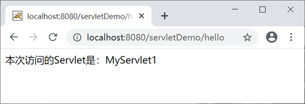
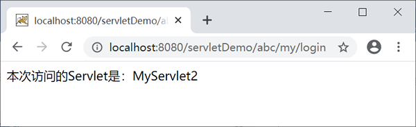
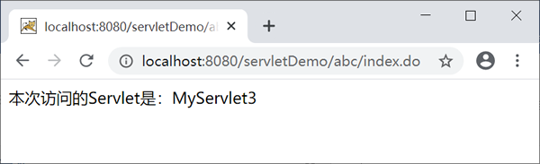
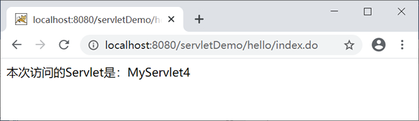
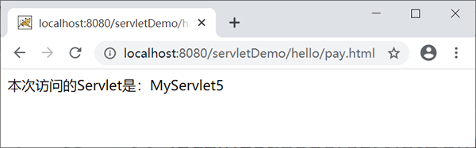
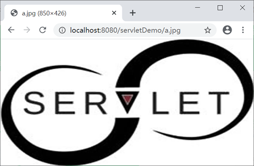

Servlet虚拟路径匹配规则
当 Servlet 容器接收到请求后，容器会将请求的 URL 减去当前应用的上下文路径，使用剩余的字符串作为映射 URL 与 Servelt 虚拟路径进行匹配，匹配成功后将请求交给相应的 Servlet 进行处理。
以 servletDemo 为例，若 URL 为“http://localhost:8080/servletDemo/myServlet”，其应用上下文是 servletDemo，容器会将“http://localhost:8080/servletDemo”去掉，使用剩余的“/myServlet”与 Servlet 虚拟路径进行匹配。
下面我们以 servletDemo 为例，分别介绍 4 种规则。
注意：目录匹配和扩展名匹配无法混合使用，即
Servlet 容器会从优先级高的虚拟路径开始匹配，匹配成功后就会立刻将请求交给相应的 Servlet 进行处理，不会再关注其他虚拟路径是否匹配成功。
在 servletDemo 的 net.biancheng.www 包下，创建名称为 VirtualPathServlet 的 Servlet 类，代码如下。
web.xml 的配置如下。
启动 Tomcat 服务器，在地址栏中输入“http://localhost:8080/servletDemo/hello”，结果如下图。
在地址栏中输入“http://localhost:8080/servletDemo/abc/my/login”，结果如下图。
在地址栏中输入“http://localhost:8080/servletDemo/abc/index.do”，结果如下图。
在地址栏中输入“http://localhost:8080/servletDemo/hello/index.do”，结果如下图。
在地址栏中输入“http://localhost:8080/servletDemo/hello/pay.html”，结果如下图。
Tomcat 服务器中的 Web 应用没有缺省 Servlet 时，会将 DefaultServlet 作为其缺省 Servlet。当客户端访问 Tomcat 服务器中某个静态 HTML 文件或者图片时，DefaultServlet 会判断该 HTML 或图片是否存在，若存在，则将数据以流的形式返回客户端，否则会报告 404 错误。
启动 Tomcat，在地址栏输入“http://localhost:8080/servletDemo/a.jpg”，结果如下图。
以 servletDemo 为例，若 URL 为“http://localhost:8080/servletDemo/myServlet”，其应用上下文是 servletDemo，容器会将“http://localhost:8080/servletDemo”去掉，使用剩余的“/myServlet”与 Servlet 虚拟路径进行匹配。
匹配规则
Servlet 虚拟路径匹配规则有以下 4 种：- 完全路径匹配
- 目录匹配
- 扩展名匹配
- 缺省匹配（默认匹配）
下面我们以 servletDemo 为例，分别介绍 4 种规则。
| 匹配规则 | 使用规则 | 虚拟路径 | 可访问的URL |
|---|---|---|---|
|
完全路径匹配 (精确匹配) |
以/开始，不能包含通配符* 。必须完全匹配 |
/myServlet /user/myServlet /product/index.action |
http://localhost:8080/servletDemo/myServlet http://localhost:8080/servletDemo/user/myServlet http://localhost:8080/servletDemo/product/index.action |
| 目录匹配 |
以/字符开头，并以/*结尾的字符串。用于路径匹配 |
/user/* /* |
http://localhost:8080/servletDemo/user/aaa http://localhost:8080/servletDemo/aa |
| 扩展名匹配 |
以通配符*.开头的字符串。用于扩展名匹配 |
*.do *.action *.jsp |
http://localhost:8080/servletDemo/user.do http://localhost:8080/servletDemo/myServlet.action http://localhost:8080/servletDemo/bb.jsp |
| 缺省匹配（默认匹配） |
映射路径为/，表示这个 Servlet 为当前应用的缺省 Servlet 或默认 Servlet，默认处理无法匹配到虚拟路径的请求。 |
/ | 可以匹配任意请求 URL |
注意：目录匹配和扩展名匹配无法混合使用，即
/rest/*.do这种写法是不正确的。
匹配优先级
Servlet 虚拟路径的匹配优先级顺序为：全路径匹配（精确匹配）> 目录匹配 > 扩展名匹配 > 缺省匹配（默认匹配）。Servlet 容器会从优先级高的虚拟路径开始匹配，匹配成功后就会立刻将请求交给相应的 Servlet 进行处理，不会再关注其他虚拟路径是否匹配成功。
示例 1
下面我们通过一个实例加深对 Servlet 虚拟路径匹配的理解。在 servletDemo 的 net.biancheng.www 包下，创建名称为 VirtualPathServlet 的 Servlet 类，代码如下。
package net.biancheng.www;
import java.io.IOException;
import java.io.PrintWriter;
import javax.servlet.ServletException;
import javax.servlet.http.HttpServlet;
import javax.servlet.http.HttpServletRequest;
import javax.servlet.http.HttpServletResponse;
public class VirtualPathServlet extends HttpServlet {
private static final long serialVersionUID = 1L;
@Override
protected void doGet(HttpServletRequest req, HttpServletResponse resp) throws ServletException, IOException {
resp.setContentType("text/html;charset=UTF-8");
PrintWriter writer = resp.getWriter();
// 向页面输出
writer.write("本次访问的Servlet是:" + this.getServletName());
writer.close();
}
@Override
protected void doPost(HttpServletRequest req, HttpServletResponse resp) throws ServletException, IOException {
doGet(req, resp);
}
}
web.xml 的配置如下。
<?xml version="1.0" encoding="UTF-8"?>
<web-app xmlns:xsi="http://www.w3.org/2001/XMLSchema-instance"
xmlns="http://xmlns.jcp.org/xml/ns/javaee"
xsi:schemaLocation="http://xmlns.jcp.org/xml/ns/javaee http://xmlns.jcp.org/xml/ns/javaee/web-app_4_0.xsd"
id="WebApp_ID" metadata-complete="false" version="4.0">
<servlet>
<servlet-name>MyServlet1</servlet-name>
<servlet-class>net.biancheng.www.VirtualPathServlet</servlet-class>
</servlet>
<servlet>
<servlet-name>MyServlet2</servlet-name>
<servlet-class>net.biancheng.www.VirtualPathServlet</servlet-class>
</servlet>
<servlet>
<servlet-name>MyServlet3</servlet-name>
<servlet-class>net.biancheng.www.VirtualPathServlet</servlet-class>
</servlet>
<servlet>
<servlet-name>MyServlet4</servlet-name>
<servlet-class>net.biancheng.www.VirtualPathServlet</servlet-class>
</servlet>
<servlet>
<servlet-name>MyServlet5</servlet-name>
<servlet-class>net.biancheng.www.VirtualPathServlet</servlet-class>
</servlet>
<!-- 完全路径匹配 -->
<servlet-mapping>
<servlet-name>MyServlet1</servlet-name>
<url-pattern>/hello</url-pattern>
</servlet-mapping>
<!-- 目录匹配 -->
<servlet-mapping>
<servlet-name>MyServlet2</servlet-name>
<url-pattern>/abc/my/*</url-pattern>
</servlet-mapping>
<!-- 目录匹配 -->
<servlet-mapping>
<servlet-name>MyServlet3</servlet-name>
<url-pattern>/abc/*</url-pattern>
</servlet-mapping>
<!-- 扩展名匹配 -->
<servlet-mapping>
<servlet-name>MyServlet4</servlet-name>
<url-pattern>*.do</url-pattern>
</servlet-mapping>
<!--缺省匹配 -->
<servlet-mapping>
<servlet-name>MyServlet5</servlet-name>
<url-pattern>/</url-pattern>
</servlet-mapping>
</web-app>
启动 Tomcat 服务器，在地址栏中输入“http://localhost:8080/servletDemo/hello”，结果如下图。

在地址栏中输入“http://localhost:8080/servletDemo/abc/my/login”，结果如下图。

在地址栏中输入“http://localhost:8080/servletDemo/abc/index.do”，结果如下图。

在地址栏中输入“http://localhost:8080/servletDemo/hello/index.do”，结果如下图。

在地址栏中输入“http://localhost:8080/servletDemo/hello/pay.html”，结果如下图。

Tomcat 中的缺省 Servlet
在 Tomcat 安装目录的 \conf\web.xml 文件中，注册了一个名称为 org.apache.catalina.servlets.DefaultServlet 的 Servlet，并将它设置为缺省 Servlet。
<servlet>
<servlet-name>default</servlet-name>
<servlet-class>org.apache.catalina.servlets.DefaultServlet</servlet-class>
<init-param>
<param-name>debug</param-name>
<param-value>0</param-value>
</init-param>
<init-param>
<param-name>listings</param-name>
<param-value>false</param-value>
</init-param>
<load-on-startup>1</load-on-startup>
</servlet>
<servlet-mapping>
<servlet-name>default</servlet-name>
<url-pattern>/</url-pattern>
</servlet-mapping>
Tomcat 服务器中的 Web 应用没有缺省 Servlet 时，会将 DefaultServlet 作为其缺省 Servlet。当客户端访问 Tomcat 服务器中某个静态 HTML 文件或者图片时，DefaultServlet 会判断该 HTML 或图片是否存在，若存在，则将数据以流的形式返回客户端，否则会报告 404 错误。
示例 2
将 servletDemo 应用的缺省匹配删除，并在 servletDemo 应用里添加一张图片 a.jpg。
<?xml version="1.0" encoding="UTF-8"?>
<web-app xmlns:xsi="http://www.w3.org/2001/XMLSchema-instance"
xmlns="http://xmlns.jcp.org/xml/ns/javaee"
xsi:schemaLocation="http://xmlns.jcp.org/xml/ns/javaee http://xmlns.jcp.org/xml/ns/javaee/web-app_4_0.xsd"
id="WebApp_ID" metadata-complete="false" version="4.0">
<!--使用tomcat的缺省Servlet访问静态资源或图片 -->
<!--需要先将项目内的缺省Servlet删除 -->
<!--缺省匹配 -->
<!--<servlet-mapping>
<servlet-name>MyServlet5</servlet-name>
<url-pattern>/</url-pattern>
</servlet-mapping>-->
</web-app>
启动 Tomcat，在地址栏输入“http://localhost:8080/servletDemo/a.jpg”，结果如下图。

关注公众号「站长严长生」，在手机上阅读所有教程，随时随地都能学习。内含一款搜索神器，免费下载全网书籍和视频。

微信扫码关注公众号